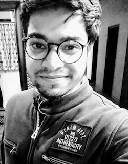

"Your profession is not what brings home your weekly paycheck. Your profession is what you're put here on earth to do, with such passion and intensity that it becomes spiritual in calling."
- Vincent Van Gogh
Now that I've brought back your existential crises (*evil smile*), let me introduce myself. I am pursuing Masters in Computer Science under the fortunate guidance of Prof. Jayant Haritsa in the Database Systems Lab. In general, I like to learn about all kinds of things but currently, I am living the world of databases and machine learning.
- History
-
- Ramjas School, Anand Parvat, New Delhi
- BTech in Computer Science, Delhi Technological University (Formerly Delhi College of Engineering)
- Software Development Intern, Samsung R&D Institute, Bangalore [2 months]
- Software Developer, Flipkart, Bangalore [around one year]
- Co-Founder, CoCatalyst, New Delhi [around one year]
- Other interests
- My three major interests are travel, English literature and films. All time favourite movie - Isle of Dogs by Wes Anderson. Apart from these, I like to follow astronomy and philosophy, listen to (mostly indie-pop and rock) music and read about our world's history. I know swimming and some racquetsports (table tennis, badminton and squash like your typical street dude).
- More Details
- Please visit my LinkedIn profile.